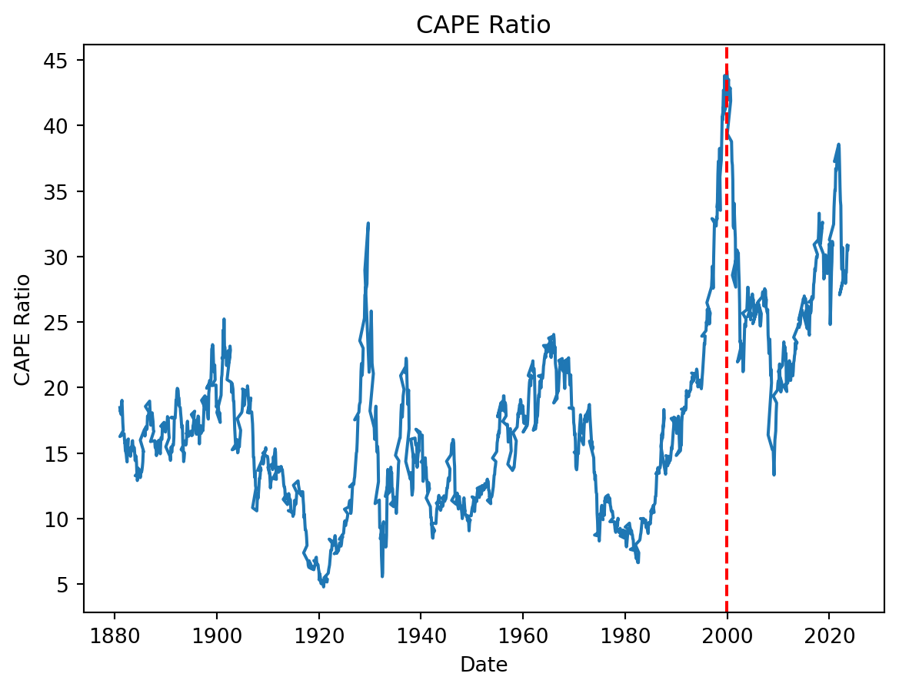

import pandas as pd
import numpy as np
# Read Excel file
data_schiller = pd.read_excel("data/ie_data_Schiller_2023.xls", sheet_name="Data", header=None)
# Drop the first 7 rows and certain columns
data_schiller = data_schiller.drop(data_schiller.index[0:7]).reset_index(drop=True)
data_schiller = data_schiller.drop(columns=[1, 14, 16])
# Set column names
data_schiller.columns = ['Date', 'S&P Comp', 'Dividend', 'Earnings', 'Consumer Price CPI',
'Date Fraction', 'Long Interest Rate', 'Real price', 'Real Dividend',
'Real Total Return Price', 'Real Earnings','Real TR Scaled Earnings',
'CAPE', 'TR CAPE', 'Excess CAPE Yield', 'Monthly Total Bond Returns',
'Real Total Bond Returns', '10 Years Annualized Stock Real Return',
'10 Years Annualized Bonds Real Return', 'Real 10 Years excess Annualized Returns'
]Introduction
For our final year project at ENSAI, we embarked on an ambitious endeavor to evaluate the impact of climate change on stock portfolio allocation, utilizing data from the Network for Greening the Financial System (NGFS). The NGFS is a collective of central banks and financial supervisors dedicated to exchanging best practices and fostering the development of environmental and climate risk management within the financial sector. This group provides various models based on climate change scenarios, which project future variables essential for our analysis.
We decided to focus our research on four countries: the United States, the UK, China, and France. Our objective was to construct a model capable of predicting stock prices in each country under different climate change scenarios, leveraging macroeconomic variables. Due to the lack of direct access to stock prices for all these countries, we adopted a methodology proposed by Robert J. Shiller to find a proxy for stock prices. By predicting this proxy using macroeconomic variables, we aimed to gain insights into future stock prices, which would then inform our portfolio allocation strategy.
An integral part of our analysis involved the CAPE ratio, developed by economist Robert J. Shiller. The CAPE ratio, or Cyclically Adjusted Price to Earnings ratio, is a valuation measure for stocks. It is calculated by dividing the stock price by the average of the company’s earnings over the last ten years, adjusted for inflation. This approach smooths out short-term fluctuations in earnings and provides a more stable measure of a stock’s valuation, making it particularly useful for long-term investment decisions. By incorporating the CAPE ratio into our model, we sought to leverage its predictive power to enhance our understanding of how climate change scenarios might influence stock valuations and, consequently, portfolio allocation decisions.
The Schiller CAPE Ratio
In 1998, Robert Schiller and John Campell found that long-term equity market returns are not random walks and could be predicted through a measure they constructed: the Cyclically Adjusted Price–Earnings ratio (CAPE ratio). Schiller and Campbell calculated the CAPE ratio by dividing a long-term index of stock market prices and earnings (the index considered is the S&P 500 index) by the average earnings per share of S&P 500 companies over the last ten years, with earnings and stock prices measured in real terms. Then
\[ CAPE_t = \frac{P_t}{[(EARN_t+EARN_{t-1}+...+EARN_{t-10})/10]} \]
With \(P_t\) the real stock market price (adjusted for inflation) and earnings level and \(EARN_t\) the average earnings per share of S&P 500 companies.
Using the average earnings over the last ten years instead of the earnings of the current year allows to smooth out the impact of business cycles on the earnings and stock prices.
The data provided below enables the computation of the CAPE ratio. The consumer price index (CPI) adjusts the stock prices and earnings for inflation, ensuring an accurate measure.
# Convert columns 2 to 20 to numeric and the Date column to string
data_schiller.iloc[:, 1:20] = data_schiller.iloc[:, 1:20].apply(pd.to_numeric, errors='coerce')
data_schiller['Date'] = data_schiller['Date'].astype(str)
# Extract year and quarter from the Date, then form a new Date format
year = data_schiller['Date'].str.slice(0, 4)
quarter = data_schiller['Date'].str.slice(5, 7)
date = year + "-" + quarter + "-01"
data_schiller['Date'] = pd.to_datetime(date, errors='coerce', format='%Y-%m-%d')
# Drop rows where Date is NA
data_schiller = data_schiller.dropna(subset=['Date'])
data_schiller[['Date', 'S&P Comp', 'Dividend', 'Earnings', 'Consumer Price CPI',
'Real price', 'Real Dividend',
'Real Total Return Price', 'Real Earnings',
'CAPE', '10 Years Annualized Stock Real Return',
]].head()| Date | S&P Comp | Dividend | Earnings | Consumer Price CPI | Real price | Real Dividend | Real Total Return Price | Real Earnings | CAPE | 10 Years Annualized Stock Real Return | |
|---|---|---|---|---|---|---|---|---|---|---|---|
| 1 | 1871-01-01 | 4.44 | 0.26 | 0.4 | 12.464061 | 109.050018 | 6.385812 | 109.050018 | 9.824326 | NaN | 0.130609 |
| 2 | 1871-02-01 | 4.5 | 0.26 | 0.4 | 12.844641 | 107.248908 | 6.196604 | 107.765291 | 9.533236 | NaN | 0.130858 |
| 3 | 1871-03-01 | 4.61 | 0.26 | 0.4 | 13.034972 | 108.266269 | 6.106124 | 109.298845 | 9.394036 | NaN | 0.130951 |
| 4 | 1871-04-01 | 4.74 | 0.26 | 0.4 | 12.559226 | 115.536124 | 6.337425 | 117.171191 | 9.749884 | NaN | 0.122056 |
| 5 | 1871-05-01 | 4.86 | 0.26 | 0.4 | 12.273812 | 121.215781 | 6.484795 | 123.479273 | 9.976607 | NaN | 0.122638 |
The table below shows the statistic descriptif of the CAPE. The mean value is 16.50
data_schiller['CAPE'].astype(float).describe()count 1713.000000
mean 17.401851
std 7.193108
min 4.784241
25% 11.951097
50% 16.501404
75% 21.137767
max 44.197940
Name: CAPE, dtype: float64data_schiller['logCape'] = np.log(data_schiller['CAPE'].astype(float))Interpretation of CAPE Ratio
The CAPE ratio is a ratio of two elements. Mathematically, it is elevated when the stock price is high relative to the average earnings over the last ten years, or conversely, when these average earnings are low compared to the stock price. Hence, it can be viewed as an indicator of the stock market’s or a specific company’s profitability.
This ratio was at a record 28 in January 1997, with the only other instance (at that time) of a comparably high ratio occurring in 1929. Shiller and Campbell asserted the ratio was predicting that the real value of the market would be 40% lower in ten years than it was at that time. That forecast proved to be remarkably prescient, as the market crash of 2008 contributed to the S&P 500 plunging 60% from October 2007 to March 2009.
The CAPE ratio for the S&P 500 climbed steadily in the second decade of this millennium as the economic recovery in the U.S. gathered momentum, and stock prices reached record levels. As of June 2018, the CAPE ratio stood at 33.78, compared with its long-term average of 17.40. The fact that the ratio had previously only exceeded 30 in 1929 and 2000 triggered a raging debate about whether the elevated value of the ratio portends a major market correction, see Figure 1
import matplotlib.pyplot as plt
plt.plot(data_schiller['Date'], data_schiller['CAPE'])
# The vertical line of the max value of the CAPE ratio
plt.axvline(x=data_schiller['Date'][data_schiller['CAPE'].idxmax()], color='r', linestyle='--')
plt.title('CAPE Ratio')
plt.xlabel('Date')
plt.ylabel('CAPE Ratio')
plt.show()

Schiller’s database and methodology
The Schiller database at our disposal contains monthly U.S. data on 19 variables from 1871 to 2023. These include the \(P_t\) value of the S&P index, earnings, dividends, the CAPE ratio, the annualized 10-year real return for the equity market and the same for the bond market. The 10 year annualized real return refers to annual returns over the next 10 years either on the stock market or on the bond market. They are observed over 10 years. This variable therefore refers to future or prospective returns. All these variables will be particularly useful in our study.
The formula for the 10-year annualized real return can be represented as follows: \[ R_{\text{annualized}} = \left( \frac{R_{\text{t}}}{R_\text{t+10 year}} \right)^{\frac{1}{10}} - 1 \]
With \(R_t\) the real total return price at the time t and \(R_{t+10 year}\) the real total return price at the time t+10 years.
Schiller and Campbell adopt a methodology to relate the CAPE ratio to the level of forward equity market returns.
Shiller’s CAPE methodology regresses the forward 10-year annualized real stock return (\(RET_t\)) on the current value of the CAPE ratio, over 1881–2004. They found:
import pandas as pd
import numpy as np
import statsmodels.formula.api as smf
# choose data from 1881 to 2004
sample_train = (data_schiller['Date'] >= '1881-01-01') & (data_schiller['Date'] <= '2004-12-31')
train_schiller = data_schiller[sample_train]
test_schiller = data_schiller[~sample_train]
train_schiller['logCape'] = pd.to_numeric(train_schiller['logCape'], errors='coerce')
train_schiller['10 Years Annualized Stock Real Return'] = pd.to_numeric(train_schiller['10 Years Annualized Stock Real Return'], errors='coerce')
# Dropping rows with NaN values after the conversion (if any)
train_schiller = train_schiller.dropna(subset=['logCape', '10 Years Annualized Stock Real Return'])
model = smf.ols(formula='Q("10 Years Annualized Stock Real Return") ~ logCape', data=train_schiller).fit()
# Display the summary of the regression
print(model.summary()) OLS Regression Results
======================================================================================================
Dep. Variable: Q("10 Years Annualized Stock Real Return") R-squared: 0.352
Model: OLS Adj. R-squared: 0.352
Method: Least Squares F-statistic: 808.8
Date: Sun, 07 Apr 2024 Prob (F-statistic): 2.05e-142
Time: 11:52:44 Log-Likelihood: 2599.8
No. Observations: 1488 AIC: -5196.
Df Residuals: 1486 BIC: -5185.
Df Model: 1
Covariance Type: nonrobust
==============================================================================
coef std err t P>|t| [0.025 0.975]
------------------------------------------------------------------------------
Intercept 0.2791 0.008 36.641 0.000 0.264 0.294
logCape -0.0794 0.003 -28.440 0.000 -0.085 -0.074
==============================================================================
Omnibus: 19.658 Durbin-Watson: 0.012
Prob(Omnibus): 0.000 Jarque-Bera (JB): 16.654
Skew: -0.192 Prob(JB): 0.000242
Kurtosis: 2.653 Cond. No. 21.5
==============================================================================
Notes:
[1] Standard Errors assume that the covariance matrix of the errors is correctly specified.C:\Users\johns\AppData\Local\Temp\ipykernel_21484\80514701.py:10: SettingWithCopyWarning:
A value is trying to be set on a copy of a slice from a DataFrame.
Try using .loc[row_indexer,col_indexer] = value instead
See the caveats in the documentation: https://pandas.pydata.org/pandas-docs/stable/user_guide/indexing.html#returning-a-view-versus-a-copy
train_schiller['logCape'] = pd.to_numeric(train_schiller['logCape'], errors='coerce')
C:\Users\johns\AppData\Local\Temp\ipykernel_21484\80514701.py:11: SettingWithCopyWarning:
A value is trying to be set on a copy of a slice from a DataFrame.
Try using .loc[row_indexer,col_indexer] = value instead
See the caveats in the documentation: https://pandas.pydata.org/pandas-docs/stable/user_guide/indexing.html#returning-a-view-versus-a-copy
train_schiller['10 Years Annualized Stock Real Return'] = pd.to_numeric(train_schiller['10 Years Annualized Stock Real Return'], errors='coerce')\[ \mathrm{RET}_t=0.28 - 0.08 \log \left(\mathrm{CAPE}_t\right)+\varepsilon_t, \quad R^2=0.35 \]
We acknowledge the following concerns : - Endogeneity of regressor : Whereby price appears in the both sides of the equation, therery violating the assumption of 1. - Induced autocorrelation : The residuals are not independent, they are correlated because using the overlapping observations.
We will use one of those corrections : - Hansen - Hodrick - Newey - West - Cochrane - Orcutt - Hjalmarsson
Less use the Newey - West correction.
import statsmodels.formula.api as smf
# Ensure your DataFrame 'train_schiller' is prepared and available
train_schiller = train_schiller.dropna(subset=['logCape', '10 Years Annualized Stock Real Return'])
# Define and fit the model with Newey-West correction
model = smf.ols(formula='Q("10 Years Annualized Stock Real Return") ~ logCape', data=train_schiller).fit(cov_type='HAC', cov_kwds={'maxlags':1})
# Display the summary of the regression with corrected standard errors
print(model.summary()) OLS Regression Results
======================================================================================================
Dep. Variable: Q("10 Years Annualized Stock Real Return") R-squared: 0.352
Model: OLS Adj. R-squared: 0.352
Method: Least Squares F-statistic: 653.9
Date: Sun, 07 Apr 2024 Prob (F-statistic): 7.96e-120
Time: 11:52:44 Log-Likelihood: 2599.8
No. Observations: 1488 AIC: -5196.
Df Residuals: 1486 BIC: -5185.
Df Model: 1
Covariance Type: HAC
==============================================================================
coef std err z P>|z| [0.025 0.975]
------------------------------------------------------------------------------
Intercept 0.2791 0.009 32.091 0.000 0.262 0.296
logCape -0.0794 0.003 -25.571 0.000 -0.085 -0.073
==============================================================================
Omnibus: 19.658 Durbin-Watson: 0.012
Prob(Omnibus): 0.000 Jarque-Bera (JB): 16.654
Skew: -0.192 Prob(JB): 0.000242
Kurtosis: 2.653 Cond. No. 21.5
==============================================================================
Notes:
[1] Standard Errors are heteroscedasticity and autocorrelation robust (HAC) using 1 lags and without small sample correctionThey obtained that the coefficient on the CAPE ratio is highly significant. Furthermore, the \(R^2\) is 35%, indicating that the CAPE ratio explains more than a third of the variation of 10-year real equity returns. Using this regression, they are able to estimate and predict returns.
Conclusion
This example shows how the CAPE ratio can be used to predict future stock returns. However, it has some limitations. Critics of the CAPE ratio contend that it is not very useful since it is inherently backward-looking, rather than forward-looking. Another issue is that the ratio relies on GAAP (generally accepted accounting principles) earnings, which have undergone marked changes in recent years.
In June 2016, Jeremy Siegel of the Wharton School published a paper in which he said that forecasts of future equity returns using the CAPE ratio might be overly pessimistic because of changes in the way GAAP earnings are calculated. Siegel said that using consistent earnings data such as operating earnings or NIPA (national income and product account) after-tax corporate profits, rather than GAAP earnings, improves the forecasting ability of the CAPE model and forecasts higher U.S. equity returns.
References
WILL, KENTON. 2023. “CAPE Ratio (Shiller PE Ratio): Definition, Formula, Uses, Example.” https://www.investopedia.com/terms/c/cape-ratio.asp.